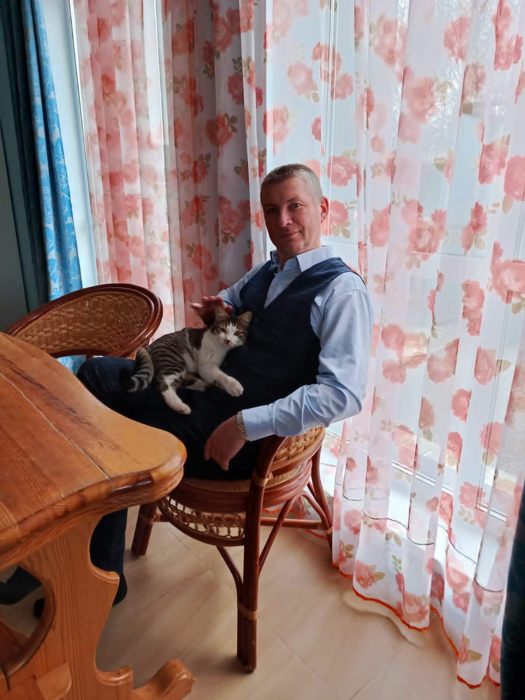

Полный текст стихотворения доступен на портале Стихи.ру.

Авторский сборник
Поэзия как форма памяти. Здесь — стихи о Родине и любви, о близких людях и долгих дорогах, о тишине и о том, что прячется между строк.
Читать стихиОб авторе
Здравствуйте, дорогие читатели. Стихи для меня — не профессия, а давняя и тихая привязанность. Первые строки появились в двадцать лет, потом было долгое молчание — и в 2025 году я снова вернулся к тетради.
На этой странице собраны мои стихотворения: о любви и семье, о Родине и памяти, о простых вещах, которые оказываются самыми важными. Если что‑то отзовётся в вашем сердце — значит, написано не зря.
С уважением и благодарностью.
Сборник
В этом разделе пока нет стихов.
Полный текст стихотворения доступен на портале Стихи.ру.